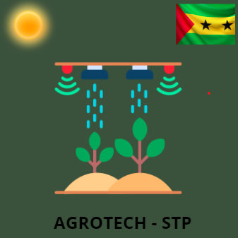
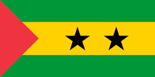

Bem vindo ao meu site
Sou Valdemiro Vila Nova Soares aluno do Curso Profissional TEAC(Técnico de Elétronica Automoção e Computadores),frequento 12ºano na Escola Técnica Profissional de Mafra ETPM e neste site você poderá observar um pouco do meu Projeto final da PAP.
Sobre Nós
AGROTECH-STP é uma empresa criada pelo aluno Valdemiro Soares com intuito de poder ajudar a agricultura Santomense, e não só tanbém de poder implementar um mega projeto no pais para desenvolvimento da agricultura e poder ajudar os agricultores que têm a sua horta bem distante do riachos.
 São Tomé e Príncipe
São Tomé e Príncipe, oficialmente República Democrática de São Tomé e Príncipe, é um país insular localizado no Golfo da Guiné, na costa equatorial ocidental da África Central. Consiste em duas ilhas principais, as ilhas de São Tomé e Príncipe, que distam cerca de 140 km uma da outra e cerca de 250 e 225 km da costa noroeste do Gabão, respectivamente.Outros países próximos são a Guiné Equatorial e os Camarões.
História da Irrigação
São Tomé e Príncipe, oficialmente República Democrática de São Tomé e Príncipe, é um país insular localizado no Golfo da Guiné, na costa equatorial ocidental da África Central. Consiste em duas ilhas principais, as ilhas de São Tomé e Príncipe, que distam cerca de 140 km uma da outra e cerca de 250 e 225 km da costa noroeste do Gabão, respectivamente.Outros países próximos são a Guiné Equatorial e os Camarões.